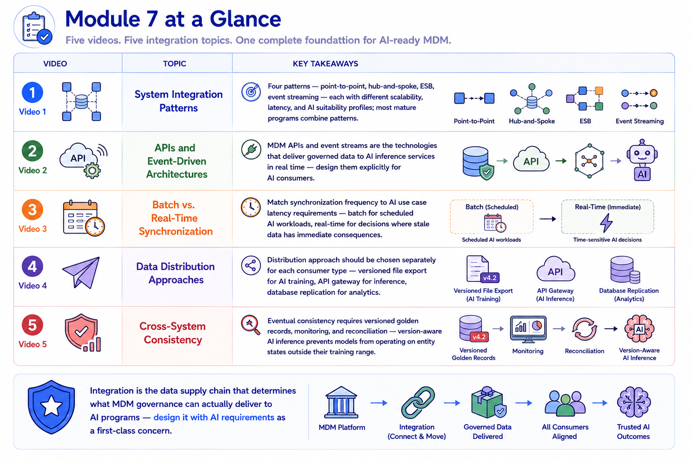
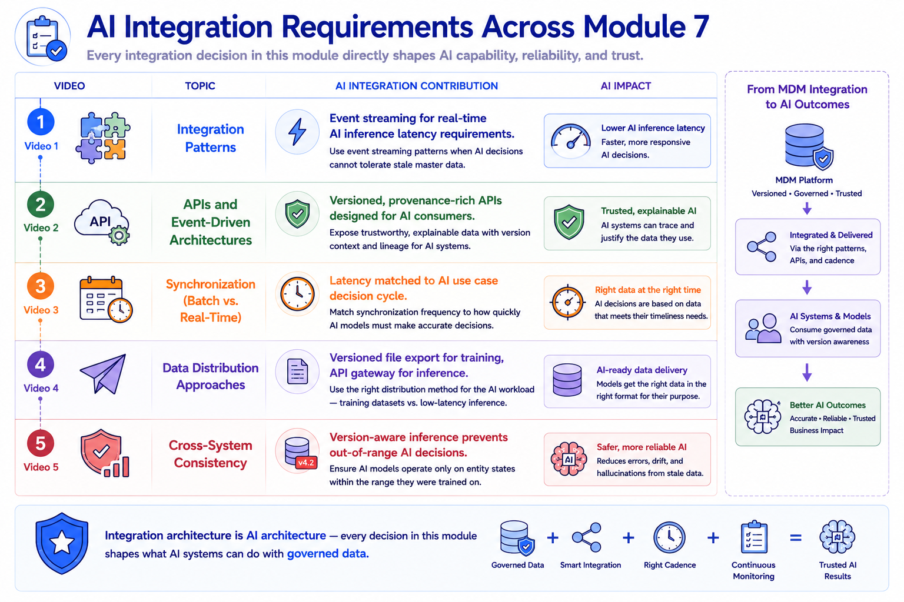
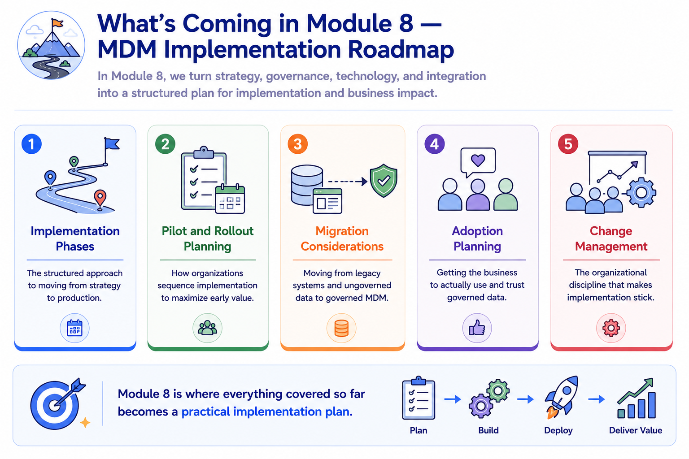
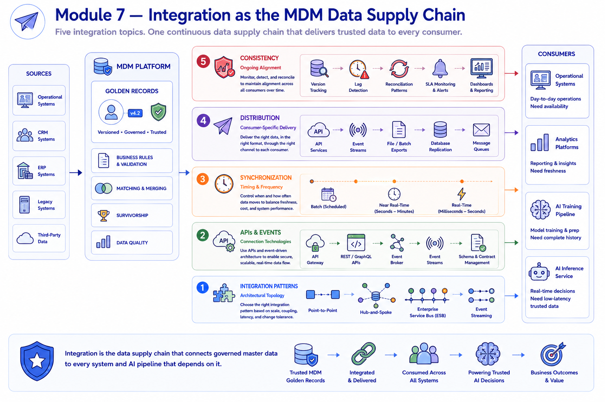

Module Recap
Module support notes
What This Module Covered
The integration decisions covered in this module are the least visible component of an MDM program — and among the most consequential for AI outcomes. An organization can have excellent governance, well-configured matching and survivorship, strong policies, and rigorous stewardship — and still deliver stale, inconsistent, or incompletely distributed data to AI systems if integration architecture decisions were made without AI use case requirements in mind.
The integration layer is where MDM governance either reaches AI programs or fails to — and the architectural choices that determine that reach are made early, locked in over time, and expensive to change once AI programs depend on them.
- System Integration Patterns — four patterns each with different scalability, latency, and AI suitability profiles; most mature programs combine patterns rather than committing to one
- APIs and Event-Driven Architectures — MDM APIs and event streams are the technologies that deliver governed data to AI inference services in real time; design them explicitly for AI consumers
- Batch vs. Real-Time Synchronization — match synchronization frequency to AI use case latency requirements; batch for scheduled AI workloads, real-time for decisions where stale data has immediate consequences
- Data Distribution Approaches — choose distribution approach separately for each consumer type; versioned file export for AI training, API gateway for inference, database replication for analytics
- Cross-System Consistency — eventual consistency requires versioned golden records, monitoring, and reconciliation; version-aware AI inference prevents models from operating on entity states outside their training range

The AI Integration Thread Through Module 7
The AI integration thread through Module 7 is more specific and more technical than the AI threads in previous modules — because integration architecture decisions are made at a level of technical detail where the AI consequences are most directly felt. The event streaming pattern that enables real-time fraud detection, the API versioning that stabilizes AI model development, the synchronization frequency that determines whether an inference service sees today's customer record or yesterday's, the distribution approach that produces reproducible training datasets — these are the specific decisions that determine whether MDM governance translates into AI capability.
Note
Integration architecture is AI architecture — every decision in this module shapes what AI systems can do with governed data. Integration Patterns determine AI inference latency support; APIs and Events provide provenance-rich data for AI consumers; Synchronization frequency matches AI decision cycles; Distribution approaches produce training-reproducible datasets; Consistency mechanisms prevent out-of-range AI decisions. These are not background plumbing decisions — they are AI program design decisions.

Preparing for Module 8
Module 8 addresses the implementation challenge that all prior modules have been building toward — how organizations translate strategy, governance design, technology selection, and integration architecture into a working MDM program that the business actually uses.
Every concept covered in Modules 3 through 7 becomes an implementation deliverable in Module 8 — the roadmap phases sequence them, the pilot approach tests them, the migration plan addresses the legacy data they need to govern, the adoption plan gets the business to trust them, and the change management discipline ensures the organizational changes they require actually take hold.
Tip
As you move into Module 8, carry the integration architecture decisions from this module into the implementation sequencing conversations. Integration is not a separate workstream — it is a dependency that shapes which implementation phases can proceed and in what order. A pilot that tests governance and matching without validating the integration layer has not tested whether the program can actually deliver governed data where it needs to go.

Every layer of the integration stack shapes what reaches AI systems — and all five layers must work together for MDM governance to translate into AI capability.
